Come importare lo script:
Basta disabilitare l'ExecutionPolicy ed eseguire lo script
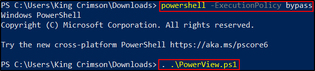
Active Directory Powershell Module
E' un modulo di Active Directory, utilizzabile tramite "Import-Module" da Powershell.
Per usare il modulo senza usare RSAT (Remote Server Administration Tools),
possiamo usare "Import-Module" per il modulo DLL ActiveDirectoy valido.
Un buon vantaggio è che è possibile usare questo modulo,
anche in constraint mode o limitati!
Ecco alcuni esempi di come è possibile enumerare i domini con questi 2 strumenti: Il comando sopra è PowerView, quello sotto è del modulo ADModule!
Ottieni il Dominio corrente: 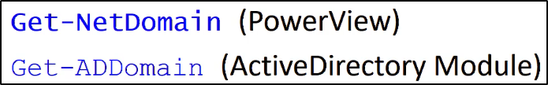 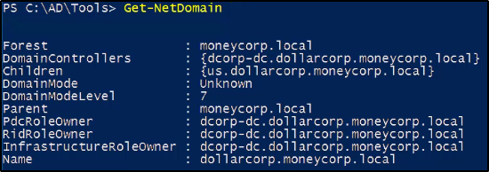
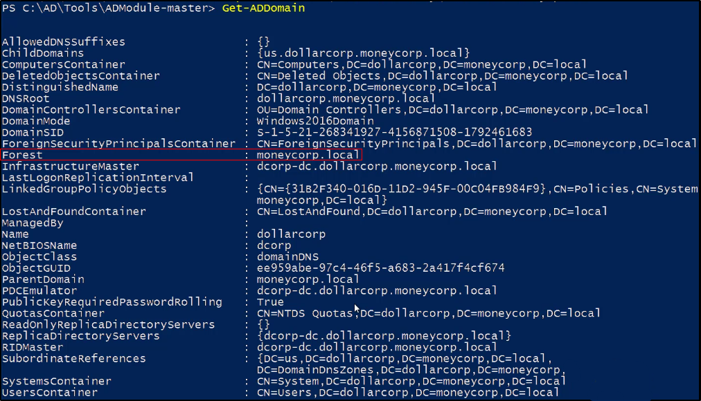
Ottieni un oggetto da un altro dominio: In questo caso, "moneycorp.local" è il dominio padre di "dollarcorp.moneycorp.local".
Possiamo sfruttare la trust tra domain e figlio per ottenere informazioni!
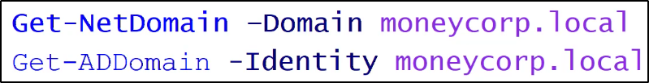
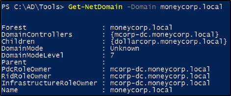
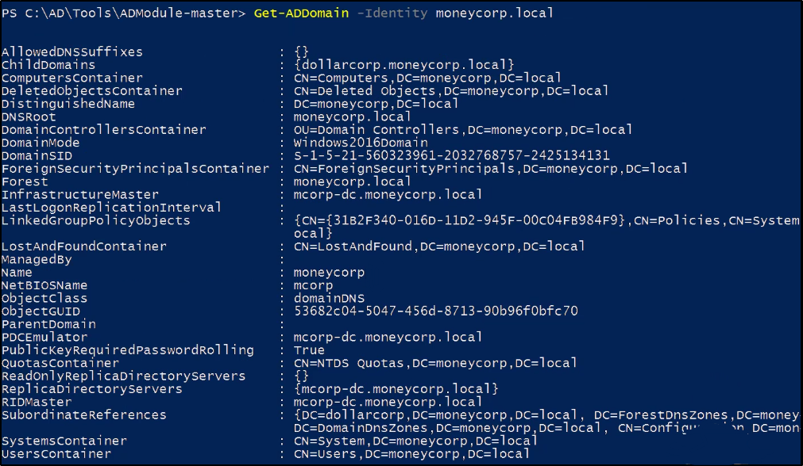
Ottieni il SID (Security Identifier) del dominio corrente:
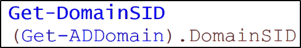
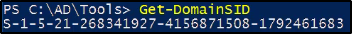
DomainSID può essere trovato per ADModule già in Get-ADDomain!
Puoi specificare l'elemento usando il punto.
Puoi vedere Domain Policy per il Domain corrente, con PowerView:
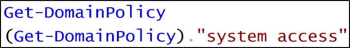
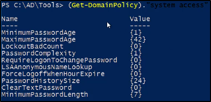
Fai attenzione anche ad info utili come quelle per Kerberos,
ci serviranno per i Kerberos Ticket!
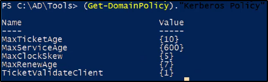
Si può vedere la Domain Policy di un dominio per il quale si ha trust, come quello padre!
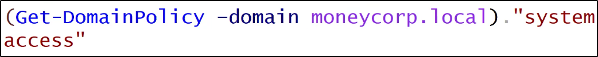
Ottieni informazioni sul Domain Controller:
Oppure informazioni sul Domain Controller di un altro dominio trustato!
Ottieni la lista degli utenti correnti per il dominio o di un certo utente:
Ricorda: le opzioni di -Properties, -Identity e -Filter sono comuni a molti moduli di AD!
Puoi anche greppare gli elementi che ti servono, usando "select + proprieta_voluta"
In questo caso, se vogliamo greppare "cn" (Common Name), possiamo fare cosi:
Belle cosette da greppare sono:
CN (Common Name)
Name
Description
ObjectSID
Puoi ottenere tutte le opzioni degli utenti per il dominio corrente:
Opzioni utili sono:
PwdLastSet: quando è stata cambiata la password
BadPwdCount: Quando la password è stata sbagliata (Tante volte = bruteforce!)
Queste opzioni sono utili per differenziare un user decoy da uno che potrebbe essere
usato per effettuare l'enumeration!
Gli utenti possono sbagliare password ed hanno almeno BadPwdCount ad 1 o più.
Inoltre, per policy di azienda, gli utenti cambiano la password mensilmente,
semestrale, annualmente, cambiando il valore di PwdLastSet.
Altre opzioni sono di LogOnCount, quante volte hanno effettuato il login.
Utile per capire se sono decoy o meno.
Stai attento a cosa attacchi perché alcuni sono decoy usati per bloccarti.
Altra opzione utile è cercare nelle descrizioni: spesse volte ci scrivono info utili o perfino le password!